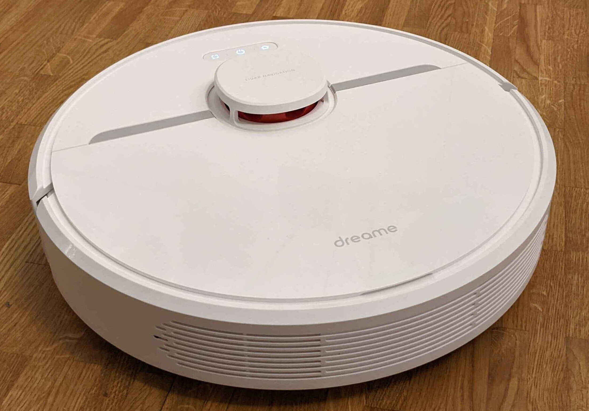
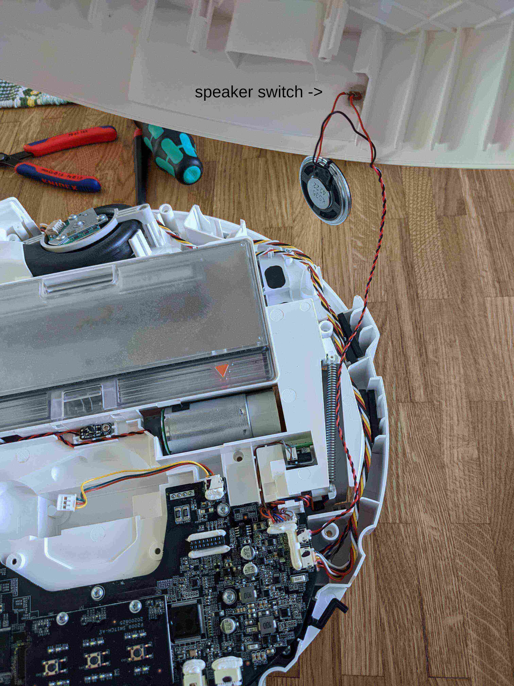
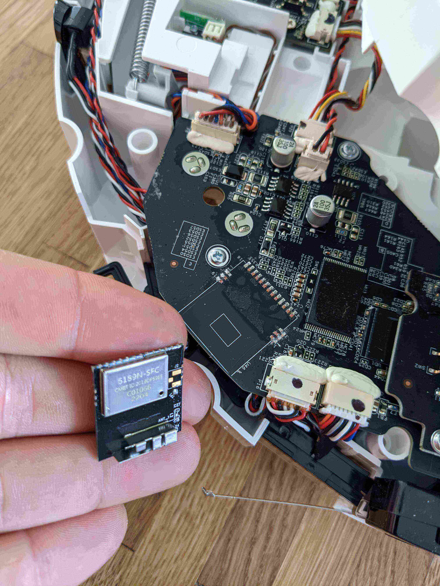

My vacuum robot works perfectly. I use it in the following way: First, I clear away anything that could potentially be in its way. After that, I press the start button and it does its thing. When it's finished, it automatically returns to the charging station.

This is how I've been using my robot so far, and I don't plan on changing anything. I don't need an app. I just want to press a button when I think vacuuming is needed. I also don't want to allow the robot into my network. Even if I can block internet access for the robot through the router, the robot might still make calls home via the smartphone app. With some robots, you can probably block the app's internet access through a firewall since the app doesn't necessarily need internet access. But consider this: They've figured out how to navigate perfectly in my appartment, so they might be smart enough to exploit a vulnerability in my phone, router or firewall.
"But you specifically bought the one without a camera. What are you afraid of?" Yes, it doesn't have a camera, but it has ultrasonic sensors. These can be used perfectly as a microphone. Here's a little reminder of what can happen when you trust these companies (the industry leader at the time) with your data: robot films person on toilet and data ends on facebook
So, I don't let it into my network. Where is the problem then? There are two issues: Firstly, the robot has a speaker that loudly reminds me every 6-8 hours that I haven't connected it to the network yet ("the robot is in setup mode, please connect it to your network..."). That is quite annoying, especially when it happens in the middle of the night. Secondly, if it's still in setup mode, anyone passing by could connect to my robot and flash their own firmware onto it. That's not exactly ideal.
These two problems could be solved by flashing an open-source firmware like Valetudo. However, since I don't need the features of Valetudo, that's not an option for me. So, I took a hardware approach and soldered a small switch to the speaker cable that can be operated from the outside. When I think the robot has something important to tell me, I can turn the switch on. In all other cases, it's on mute now. To eliminate the open Wi-Fi, I simply desoldered the Wi-Fi module. I can solder it back on later if I ever decide that I need it.

